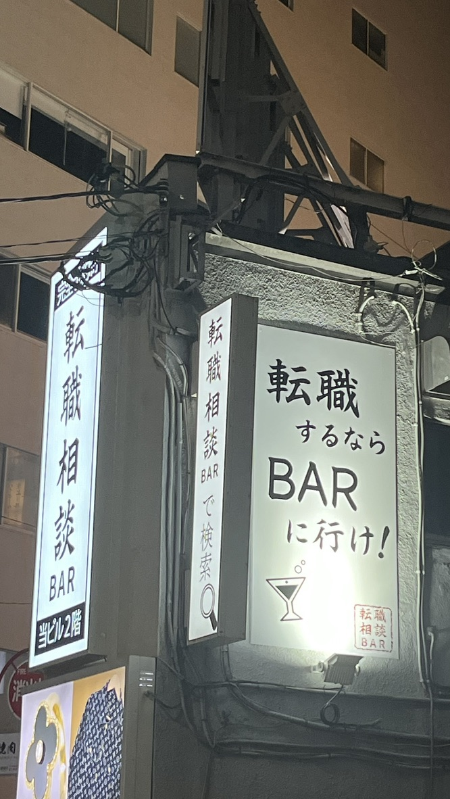
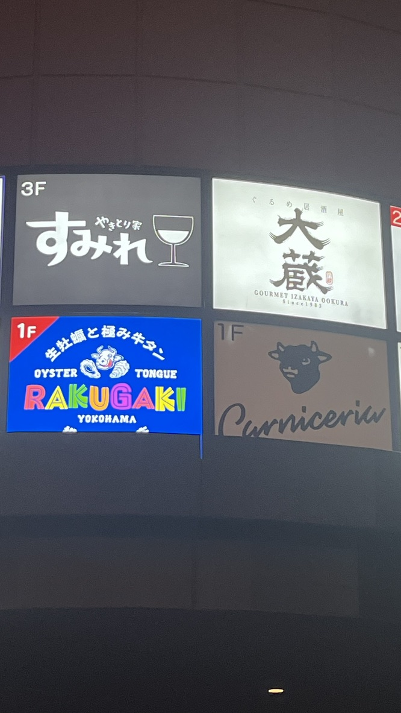
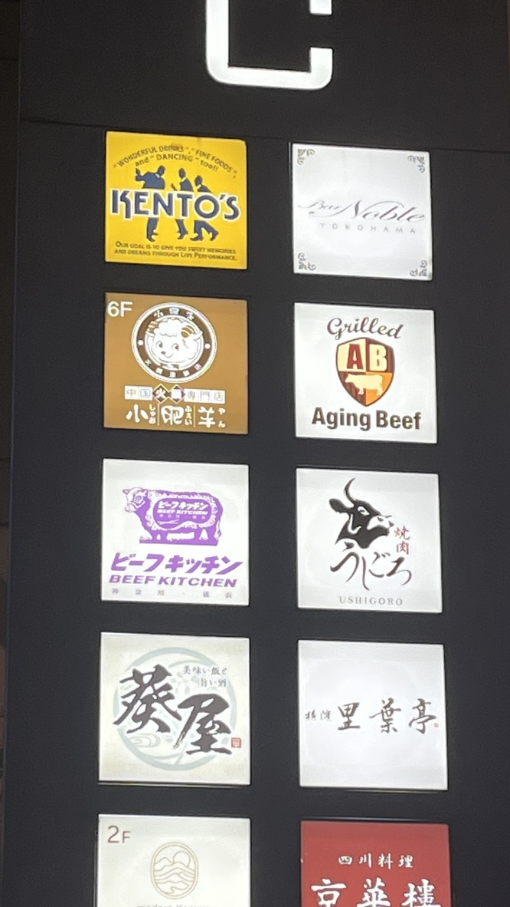
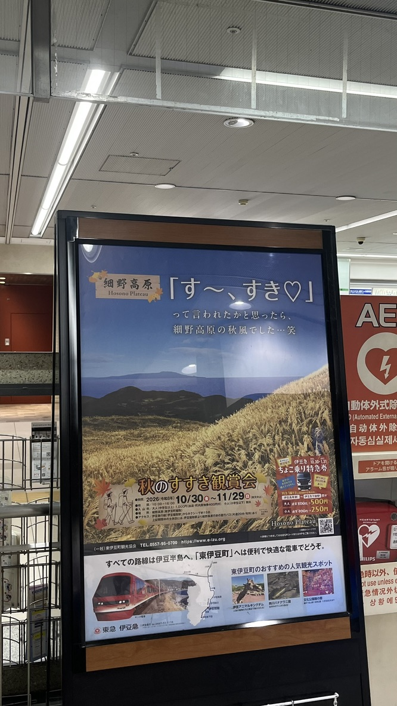

転職するならBARに行け！

横浜 鶴屋町で撮影
転職相談とBARを組み合わせた、思わず目を引く看板。 「転職するならBARに行け！」という印象的な言葉が気になり、撮影しました。
いろんな牛さん


横浜 鶴屋町で撮影
ビーフキッチンや焼肉店など、さまざまな飲食店の看板を発見。 牛のイラストやロゴがそれぞれ違っていて、見比べるのが面白いと感じました。
す〜、すき

横浜駅 東横線ホーム内で撮影
伊豆の細野高原で開催される、秋のすすき観賞会のポスター。 「す〜、すき♡」という言葉遊びが印象的で、秋らしい風景にも惹かれました。